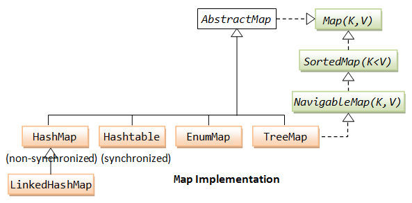
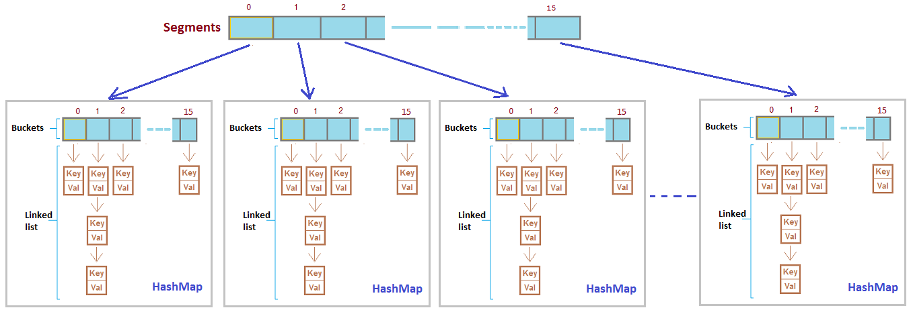
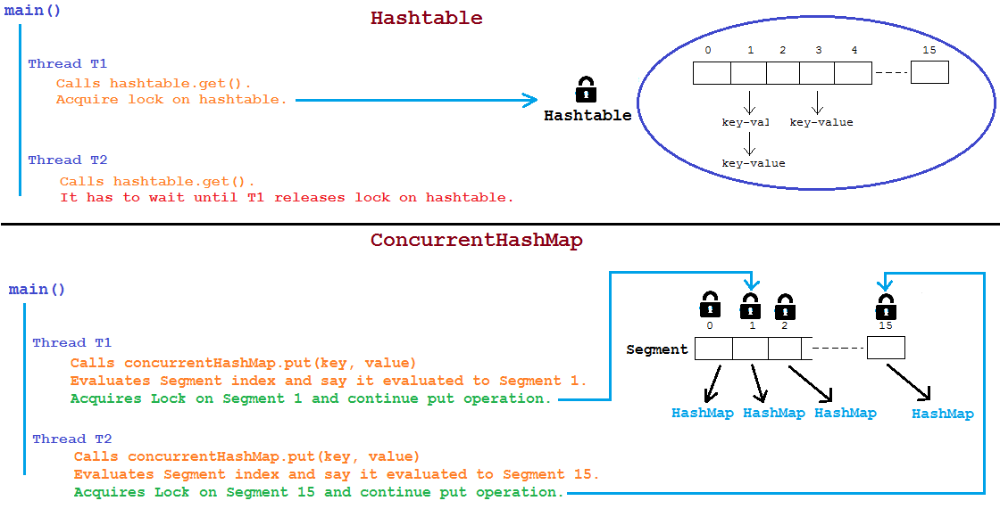
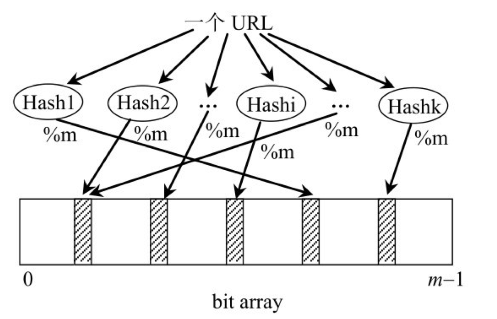

1 TL;DR
1.1 Java Collections

推荐阅读这篇文章, 了解Java(1.7)的Collections框架
源码基于 1.8.0_144
➜ java -version java version "1.8.0_144" Java(TM) SE Runtime Environment (build 1.8.0_144-b01) Java HotSpot(TM) 64-Bit Server VM (build 25.144-b01, mixed mode)
2 List
- 基础操作
| 操作 | 释义 |
|---|---|
| get | 获取数据 |
| set | 设置数据 |
| add | 添加数据 |
| remove | 移除数据 |
| size | 获取长度 |
-
Java中List的接口关系图

为什么接口中要提供一个iterator? 我的理解包括下面几点: iterator 要求在获取数据的时候, List没有被修改, 否则就报错(ConcurrentModificationException), 这样相对更安全, 更多讨论请查看StackOverflow上的讨论
2.1 ArrayList
2.1.1 ArrayList implements Iterable
在 ArrayList 里面, 需要有一个 iterator 方法, 这里用到了 inner class
public class MyArrayList<AnyType> implements Iterable<AnyType> {
private AnyType[] theItems;
public java.util.Iterator<AnyType> iterator() {
return new ArrayListIterator<AnyType>();
}
private static class ArrayListIterator<AnyType> implements java.util.Iterator<AnyType> {
private int current = 0;
public AnyType next() {
return theItems[current++];
}
// ...
}
}
使用 inner class 的原因是: 我们在 inner class 里面可以获取当前对象的fields. 在这里是: theItems
2.1.2 ensureCapacity
List和数组最大的一个特点是不用设置长度
但是ArrayList是用 Array 来实现的, 每一个数组需要在初始化的时候就将长度设置好, 那 ArrayList 是如何做到的呢?
public class ArrayList<E> extends AbstractList<E>
implements List<E>, RandomAccess, Cloneable, java.io.Serializable {
private static final int DEFAULT_CAPACITY = 10;
private void ensureExplicitCapacity(int minCapacity) {
modCount++;
// 在这里判断容量不够用了, 就对容量进行增长
if (minCapacity - elementData.length > 0) {
grow(minCapacity);
}
}
/**
* Increases the capacity to ensure that it can hold at least the
* number of elements specified by the minimum capacity argument.
*
* @param minCapacity the desired minimum capacity
*/
private void grow(int minCapacity) {
// overflow-conscious code
int oldCapacity = elementData.length;
int newCapacity = oldCapacity + (oldCapacity >> 1);
if (newCapacity - minCapacity < 0)
newCapacity = minCapacity;
if (newCapacity - MAX_ARRAY_SIZE > 0)
newCapacity = hugeCapacity(minCapacity);
// minCapacity is usually close to size, so this is a win:
elementData = Arrays.copyOf(elementData, newCapacity);
}
}
在上面看到了几个关键的方法
- ensureExplicitCapacity
- grow
在 grow 方法中, 可以看到关键的一行
newCapacity = oldCapacity + (oldCapacity >> 1)
新增的容量为原有容量的1.5倍
ArrayList能动态地增长长度, 当容量不够的时候, 会进行grow操作, 将所有的数据拷贝(Arrays.copyOf)到一个新的数组中, 并进行数组的扩容处理.
2.1.3 modCount
在Iterator的实现中, 有一个非常奇怪的变量: modCount, 源码中对她的解释为:
The number of times this list has been structurally modified. Structural modifications are those that change the size of the list, or otherwise perturb it in such a fashion that iterations in progress may yield incorrect results.
我们在源码中可以看到, 只要对该ArrayList进行任何操作, 都会修改这个值. 我的理解是 modCount 为 modifications count 的缩写, 即修改的次数. 它用在哪儿呢?
在 Iterator 中, 定义了一个 expectedModCount
public class MyArrayList<AnyType> implements Iterable<AnyType> {
private AnyType[] theItems;
public java.util.Iterator<AnyType> iterator() {
return new ArrayListIterator<AnyType>();
}
private static class ArrayListIterator<AnyType> implements java.util.Iterator<AnyType> {
int expectedModCount = modCount;
// ...
}
}
expectedModCount 初始值为 modCount 的值, 如果发现 Iterator 对象在使用的时候, 发现两个值不相等, 则会抛出ConcurrentModificationException异常
modCount确保了在使用Iterator的过程中, 这个List没有被修改过. 在LinkedList也有相同的变量.
final void checkForComodification() {
if (modCount != expectedModCount) {
throw new ConcurrentModificationException();
}
}
2.1.4 支持RandomAccess
她支持RandomAccess, 在 二分法查找 的时候比 LinkedList 更加有优势
2.2 LinkedList

2.2.1 Doubly Linked
在Java中, LinkedList是双向的, 他还实现了 Deque, double ended queue
在 数据结构中, 有一个 inner class: Node
public class LinkedList<E> {
private static class Node<E> {
E item;
Node<E> next;
Node<E> prev;
Node(Node<E> prev, E element, Node<E> next) {
this.item = element;
this.next = next;
this.prev = prev;
}
}
}
其中包含next和prev两个field
2.2.2 Sentinel Nodes
- head node
- tail node
一些使用场景如下:
-
clearNode
当清空该 LinkedList 的时候, 只需要设置
head.next = tail
-
addAll
将两个LinkedList连接, 只需要直接处理 head 和 tail 即可
-
查找某个位置的节点数据 在源码中可以看到, 有了size, head 和 tail node, 如果要找位置index的node, 则可以判断 index 和 size 之间的关系:
如果 index < size / 2, 则从head开始找, 否则从tail开始找
Node<E> node(int index) { // 如果 index < size / 2, 则从head开始找, 否则从tail开始找 if (index < (size >> 1)) { Node<E> x = head; for (int i = 0; i < index; i++) x = x.next; return x; } else { Node<E> x = tail; for (int i = size - 1; i > index; i--) x = x.prev; return x; } }
2.2.3 不支持RandomAccess
二分查找法的时候, 总的来说平均时间比 ArrayList 要慢. 在原生的Java的二分查找的时候, 对非RandomAccess的List做了不同的处理
public class Collections {
public static <T> int binarySearch(List<? extends T> list, T key, Comparator<? super T> c) {
if (c==null)
return binarySearch((List<? extends Comparable<? super T>>) list, key);
if (list instanceof RandomAccess || list.size()<BINARYSEARCH_THRESHOLD)
return Collections.indexedBinarySearch(list, key, c);
else
return Collections.iteratorBinarySearch(list, key, c);
}
}
2.3 LinkedList和ArrayList的使用场景
见 StackOverflow: When to use LinkedList over ArrayList?
所经历的项目中没有使用过LinkedList.
3 Stack

Java8中用Vector来实现栈的数据结构
class Stack extends Vector {}
class Vector extends AbstractList implements List, RandomAccess {}
| 操作 | 释义 |
|---|---|
| pop | 出栈 |
| push | 入栈 |
| size | 栈的高度 |
| peek | top data |
| size | 获取长度 |
3.1 Vector
3.1.1 elementData
Vector使用数组来存储数据
class Vector {
protected Object[] elementData;
}
和 ArrayList 类似, 她也有一个初始的容量 10:
class Vector {
/**
* Constructs an empty vector so that its internal data array
* has size {@code 10} and its standard capacity increment is
* zero.
*/
public Vector() {
this(10);
}
}
支持在容量不够的时候, 自动地grow. 实现方式和ArrayList类似, 这里不再重复
3.1.2 synchronized
Vector 有很多方法是添加了 synchronized 关键词.
class Vector {
public synchronized void trimToSize() {}
public synchronized void ensureCapacity(int minCapacity) {}
}
3.1.3 官方不建议使用Vector
As of the Java 2 platform v1.2, this class was retrofitted to implement the {@link List} interface, making it a member of the Java Collections Framework. Unlike the new collection implementations, Vector is synchronized. If a thread-safe implementation is not needed, it is recommended to use ArrayList in place of Vector.
建议用 ArrayList 替换 Vector
3.2 一些使用栈的场景
3.2.1 Balancing Symbols
检查一些符号, 如(\['" 是否封闭
算法思路: 以()的检测举例子, 遇到 ( 的时候, 入栈, 遇到 ) 的出栈. 最终在所有的符号都结束之后, 看下栈里面是否有数据, 如果有, 则说明()是未封闭的
(a == 1) && (b == 2) // 检测通过 (a == 1) && (b == 2 // 检测不通过, 栈内还存在元素: (
4 Queue

| 操作 | 释义 |
|---|---|
| pop | 出队列 |
| push | 入队列 |
| size | 队列长度 |
核心fields:
- theItems 数组, 记录队列的值
- front 队列头的位置
- back 队列尾的位置
- size 队列长度
4.1 Circular Array
可以使用环状的数组来存储Queue的数据. 初始化的时候, 而 back 的位置为 N - 1, front 的位置为 N - k - 1. 其中 N 为数组的长度, k 为初始队列的数据的个数
入队列, 则从数组的头开始. 入队列和出队列就是改变 front 和 back 的过程
空Queue的条件为
back = front - 1
另外, 还需要注意Queue满的情况,此时需要考虑扩容.
4.2 Queue的Java实现
Java中, LinkedList实现了 Deque, Deque继承自Queue
class LinkedList implements Deque {}
interface Deque extends Queue {}
Deque: A linear collection that supports element insertion and removal at both ends. The name deque is short for "double ended queue" and is usually pronounced "deck". Most {@code Deque} implementations place no fixed limits on the number of elements they may contain, but this interface supports capacity-restricted deques as well as those with no fixed size limit.
5 Tree

-
基础概念
名称 释义 node 节点 edge 连接线 path 节点到节点之间的路径 length path所经过的edge的个数 root 根节点 depth 深度,是指从root节点到该节点经过某一个path的length.节点J的depth为2 height 高度,是指节点到最远的一个leaf的length,节点E的hieght为2 leaves 叶子节点 siblings 兄弟节点 child 子树 preorderTraversal 前序遍历 
inorderTraversal 中序遍历 
postorderTraversal 后序遍历 
5.1 Binary Tree

5.1.1 基本结构
- element
- leftNode
- rightNode
5.1.2 使用场景
5.1.2.1 表达式
将表达式转化为postfix形式, 再用栈创建一颗可以中序遍历的树
(a + b) * (c * (d + e))
利用栈, 转变为postfix形式:
a b + c d e + * *
利用栈, 转化为树.
a b + c d e + * * 依次入栈, 遇到 a, b 创建树, 分别入栈, 遇到 + 将 a, b 出栈, a, b, + 组成一个新的树, 最终的树为下图所示. 最终可以通过中序遍历进行运算. 另外, 可以后序遍历恢复为 a b + c d e + * *`

Operand 操作数, 如 a, b, c, d, e; Operator 操作符, 如 + *
5.1.2.2 BST BinarySearchTree
- leftNode <= parentNode <= rightNode
一些重要的方法包括
- .build 构建一棵树 - #insert 插入某个数字 - #remove 移除 - #contains 是否包含某个数字 - #preOrderTraversal 先序遍历 - #inOrderTraversal 中序遍历 - #postOrderTraversal 后序遍历
上述方法的实现请见例子: BinarySearchTree 和 对应的测试用例: BinarySearchTreeTest
5.2 AVL Tree
AVL (Adelson-Velskii and Landis), a balanced Tree
- Binary Tree
- 任何一个节点的左右子树的高度差的绝对值 <= 1
depth: 深度,是指从root节点到该节点经过某一个path的length, height: 高度, 是指节点到最远的一个leaf的length
如下图所示, 只有 左边是 AVL Tree, 右边不是, 右边的 2 的高度为2, 8 的高度为0, 不满足 左右子树的高度差的绝对值 <= 1 的条件

平衡的情况包括四种
-
左子树 的 左子树 插入 一个节点
如下图 10 的 左子树 5, 插入 节点 1 20 10 10 30 -> 5 20 5 15 1 15 30 1 以20为节点, 向右旋转20的左节点10 -
右子树 的 右子树 插入 一个节点
如下图 30 的 右子树 40, 插入 节点 50 20 30 10 30 -> 20 40 25 40 10 25 50 50 以20为节点, 向左旋转20的右节点30 -
左子树 的 右子树 插入 一个节点
如下图 10 的 右子树 15, 插入 节点 18 20 15 10 30 -> 10 20 8 15 8 18 30 18 分两步: 先按照case2旋转10, 再按照case1旋转20 -
右子树 的 左子树 插入 一个节点
如下图 30 的 左子树 25, 插入 节点 21 20 25 10 30 -> 20 30 25 50 10 21 50 21
算法代码: 这里
5.3 B(+) Tree
Disk accesses are incredibly expensive!
B 树的高度一般为3层左右, 通过一些冗余的搜索信息, 可以快速地进行数据的定位
- 数据存储在叶子节点中
- 非叶子节点保存搜索信息
5.3.1 B 和 B+ 的区别
参考这里 Difference between B Tree and B+ Tree
6 Map

6.1 HashMap
Hash包含两个元素
- Hash Function
- Storage, 一般是Array
例子:
Map<String, String> map = new HashMap<>();
map.put("ds", "v587");
上述过程的伪代码包括:
mapInMemory = map.getMemory // 预获取内存的一块区域
hashValue = hash("ds") // 获取到一个内存地址
mapInMemory.set(hashValue, "v587") // 设置值
参考: hashtable_and_perfect_hashing
6.1.1 Collision
当不同的key, 调用hash函数的时候, 返回的值相同(示例代码), 这样的情况称为 Collision
hash("ds1") === hash("ds2")
尽量减少 Collision 情况的发生, 需要是的 hash() 不重复
在 Data Structures and Algorithm Analysis in Java 这本书书中, 介绍了两种处理冲突的方案
-
Separate Chaining
用LinkedList存储Collision的数据
一般来说, 会对 tableSize 进行 mod 运算, 作为数组的下标值
-
Open Addressing
将数据按照某种方法存储在相邻的位置, 需要更小的
Load Factor
- Linear Probing - Quadratic Probing - Double Hashing
参考 Hash Collision Probabilities
6.1.2 Load Factor
真实的数据的个数/分配的内存区域的个数
在java中设置了一个 DEFAULT_LOAD_FACTOR 参数, 初始化 threshold = table.length * DEFAULT_CAPACITY
当 实际数据的size 大于 threshold 这个值, 说明内存区域不够了, 有更大地概率产生 collision, 故
需要进行rehash
尽量减少她rehash的概率, 如果确定了HashMap的Size, 可以在新建的时候就设置好
// 预先设置大小为 100 Map<String, String> map = new HashMap<>(100);
Java中的 DEFAULT_LOAD_FACTOR 为 0.75, 初始的容量 DEFAULT_INITIAL_CAPACITY 为 16
建议阅读: What is the significance of load factor in HashMap?
6.1.3 equals and hashCode
hashCode: 用于 hash 函数中
在String类中会有一个field为hash, 默认为0, 如果一个string被调用了hashCode方法,
该hash值会被自动赋值, 即使用 String#hash 做了hashCode的缓存.
equals: 在SDK中, 解决Collision的方式为 Chaining, 即使用一条链表来存储对应的冲突记录, 此时获取一个key对应的value时,
假如链表中有多个值, 则使用equals方法对 key 进行比对, 如果相等, 则取该key对于的value值返回
6.1.4 HashMap源码分析
6.1.4.1 hash function
java的hash函数很有意思, h >>> 16 是指对h的指往右移16位, 然后再做异或门(XOR)操作, 这样做是为了让高位值分布更加均匀一些
static final int hash(Object key) {
int h;
return (key == null) ? 0 : (h = key.hashCode()) ^ (h >>> 16);
}
Computes key.hashCode() and spreads (XORs) higher bits of hash to lower. Because the table uses power-of-two masking, sets of hashes that vary only in bits above the current mask will always collide. (Among known examples are sets of Float keys holding consecutive whole numbers in small tables.) So we apply a transform that spreads the impact of higher bits downward. There is a tradeoff between speed, utility, and quality of bit-spreading. Because many common sets of hashes are already reasonably distributed (so don't benefit from spreading), and because we use trees to handle large sets of collisions in bins, we just XOR some shifted bits in the cheapest possible way to reduce systematic lossage, as well as to incorporate impact of the highest bits that would otherwise never be used in index calculations because of table bounds.
6.1.4.2 table index
如何计算这个hash值在table中对应的index是什么呢? 代码如下:
i = (table.length - 1) & hash
即取hash的低位, 比如初始化的table大小为 16,
假如 hash 函数的返回值为 9, 则 i 为 9
1111 & 1001 = 1001
假如 hash 函数的返回值为 18, 则 i 为 2
1111 & 1 0010 = 0010
在JDK的设计中, table.length 为 2的幂次方.
6.1.4.3 resize
resize 会将hash的table的 threshold变为两倍: newThr = oldThr << 1.
容量capacity变成两倍: newCap = oldCap << 1.
这里设置了table的最大的threshold: 1 << 30
部分源码如下:
if ((newCap = oldCap << 1) < MAXIMUM_CAPACITY && oldCap >= DEFAULT_INITIAL_CAPACITY) {
newThr = oldThr << 1; // double threshold
}
resize 在并发更新的时候, 可能会产生死循环(Before JDK 1.6), 见 A Beautiful Race Condition 和 Infinite Loop in Hashmap
阅读源码真的获益匪浅, 学到很多位操作如: ^, >>>, << 和 ++size > threshold 等,
惊叹一些代码的简洁性. Hash算法本身不难, 但是很精妙, 该部分只是涉及到了HashMap的很小一部分,
关于Object#hashCode()方法, 有时间的时候还需要再研究一下.
Hash部分的FAQ可以参考: HashMap Interview Questions
6.2 ConcurrentHashMap
ConcurrentHashMap 不允许 null 作为 Key和Value
ConcurrentHashMap 和 HashMap 的处理逻辑类似, 但是为了解决并发写入的问题, 引入了ConcurrentLevel的概念
6.2.1 ConcurrentLevel
ConcurrentLevel 设置了同时更新该map的参考线程数. 默认值为: 16
6.2.2 Segement(1.7版本, 已过时)
如果以Segement的角度来看待ConcurrentHashMap, 结构如下 
可以看做 Segement 是将Map的数据进行打散并重新分配, 类似于算法中的 Divide and Conquer
每一个Segement都持有自己的lock, 故不同的Segement更新互不干扰的.
另外一种Map的数据结构: Hashtable, 她的相关操作都是添加了 synchronized 关键词的, 是整个table都添加了锁. 下图是 Hashtable 和 ConcurrentHashMap 的获取锁的对比图

参考: How-does-segmentation-works-in-ConcurrentHashMap
更新: Java8 去掉了 Segement 的概念, 将锁加在了bucket维度, 也即是node维度, 部分代码如下:
public class ConcurrentHashMap {
/** Implementation for put and putIfAbsent */
final V putVal(K key, V value, boolean onlyIfAbsent) {
if (key == null || value == null) throw new NullPointerException();
int hash = spread(key.hashCode());
int binCount = 0;
for (Node<K,V>[] tab = table;;) {
Node<K,V> f; int n, i, fh;
// 中间代码省略...
// 获取到节点
f = tabAt(tab, i = (n - 1) & hash);
// 更新节点
synchronized (f) {
}
}
}
6.2.3 Volatile Read
ConcurrentHashMap 的 读是lock-free的, 她使用了volatile 关键字保证了内存可见性, 如下面的定义Map的节点的结构为
public class ConcurrentHashMap {
static class Node<K,V> implements Map.Entry<K,V> {
final int hash;
final K key;
volatile V val;
volatile Node<K,V> next;
}
关于读写锁的问题, 参考ConcurrentHashMap read and write locks
关于 HashMap, ConcurrentHashMap 和 Hashtable 的区别, 可参考这里 Popular HashMap and ConcurrentHashMap Interview Questions
7 Bloom Filter
布隆过滤器 经常使用与 黑名单过滤 的场景, 黑名单中的数据一定不会漏过, 但是有可能会误判. 属于 宁可错杀, 不放过 的过滤器.
题目如下:
现在有 100亿 个黑名单URL, 一个URL的长度为64B, 需要判断一个 URL 是否在黑名单中, 允许万分之一的误判率, 使用空间不超过30G
如果直接使用Hash算法, Key 和 Value 大概占有 64B, 100亿则为 640GB, 不满足空间要求. 在一定的误判率下, 可以使用 Bloom Filter
她的思路如下:
-
数据准备
- 将 10亿 个数据源, 通过 K 个 HashFunction 计算出结果
- 设计一个长度为 M(M > N) 的 Array, 数据里面的类型都是 bit, 只有0和1两个取值
- 将 1 的计算结果对 M 取余(%M), 将获取到的值, 对应为数字的坐标, 设置对应的值为1

-
判断是否是黑名单URL
- 将待查的 URL, 通过 K 个 HashFunction 计算出结果
- 将 1 的计算结果对 M 取余(%M), 将获取到的值, 去 Array 中按照坐标查询
- 如果有一个值为0, 则说明不在黑名单中. 如果全部为1, 则认为在黑名单中
7.1 基本元素
- Input n
- bitArray m
- HashFunction k
7.2 误判问题
由于 HashFunction 算出来的值是有可能产生 collision 的, 所以可能存在有一个 URL 不在黑名单, 但是通过 K 和 HashFunction 计算之后, 对应到 bitArray 中, 所有的值都为1
7.3 最优解
可以通过 N 和 可容忍的误判率 P, 计算合理的 M 和 K 值, 详情见这里